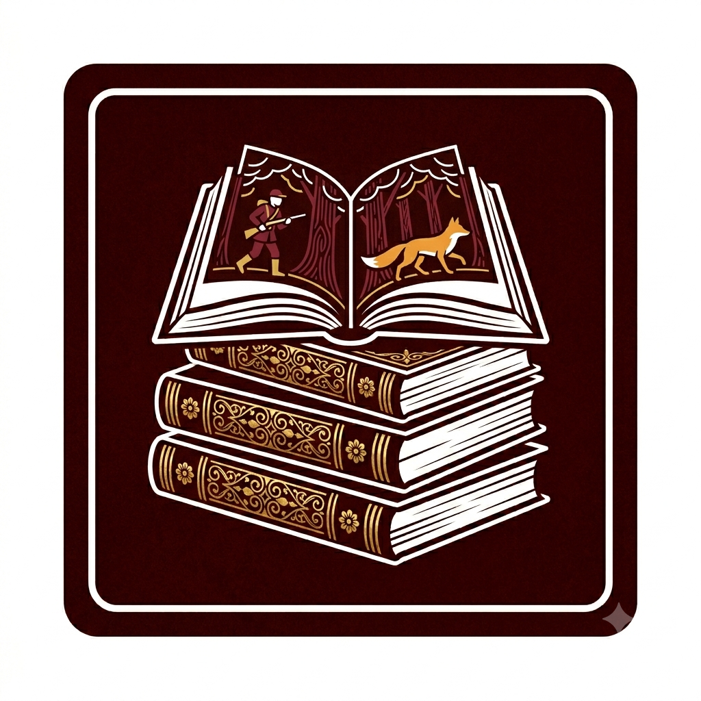

Bem-vinda ao Reading With Me
Por: Pietra Galvão
Aqui você vai encontrar recomendações de livros de vários gêneros, resenhas e dicas para sua próxima leitura.
vou te ajudar a achar sua próxima leitura! Compartilhando recomendações de livros e resenhas.

Por: Pietra Galvão
Aqui você vai encontrar recomendações de livros de vários gêneros, resenhas e dicas para sua próxima leitura.

Gênero: Romantasia
A Court of Thorns and Roses (ACOTAR) acompanha Feyre Archeron, uma jovem humana que é levada para o mundo dos feéricos após matar uma criatura na floresta. Lá, ela descobre segredos, perigos e um romance intenso em um universo dividido entre cortes mágicas, política e guerras antigas. É uma história que mistura fantasia, romance e crescimento pessoal.
Gênero: Fantasia
Um garoto descobre que é bruxo e é levado para Hogwarts, onde aprende magia, faz amigos e descobre um mundo escondido dos humanos.
Gênero: Distopia
Katniss Everdeen vive em um futuro onde jovens são obrigados a participar de um jogo mortal transmitido pela TV. Ela precisa lutar para sobreviver e desafiar um sistema cruel.
Gênero: Suspense
Uma escritora encontra manuscritos secretos que revelam verdades perturbadoras sobre a vida de outra autora famosa, levando-a a um mistério psicológico intenso.
Gênero: Terror
Um grupo de crianças enfrenta uma entidade maligna que assume a forma de um palhaço, retornando anos depois para terminar o que começou.
Gênero: Drama
Durante a Segunda Guerra Mundial, uma menina encontra nos livros uma forma de escapar da realidade difícil e dos horrores ao seu redor.
Gênero: Ficção Científica
Em um futuro onde a realidade virtual domina o mundo, um jovem participa de uma competição dentro de um universo digital para conquistar uma herança bilionária.
Gênero: Romance Policial
Um assassinato acontece dentro de um trem luxuoso e o detetive Hercule Poirot precisa descobrir quem é o culpado entre os passageiros.
Aqui ficam os livros que mais gostei recentemente. Sempre atualizando com novas leituras! Esse mês meu livro favorito foi Deus da Dor da Rina kent, para quem gosta de um dark romance algo mais sombrio, ele tem um plot twist muito interessante e é o segundo livro da série Legacy Of Gods.